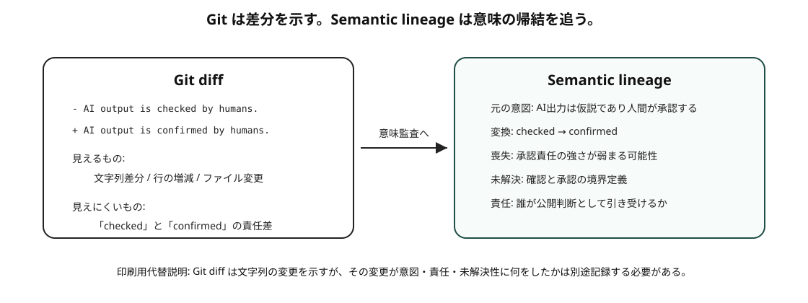
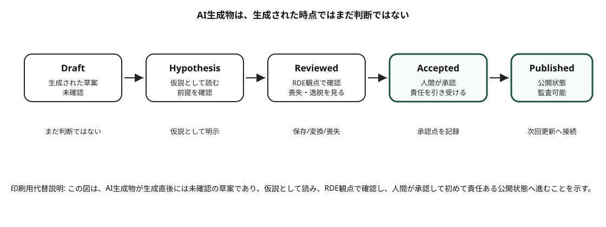
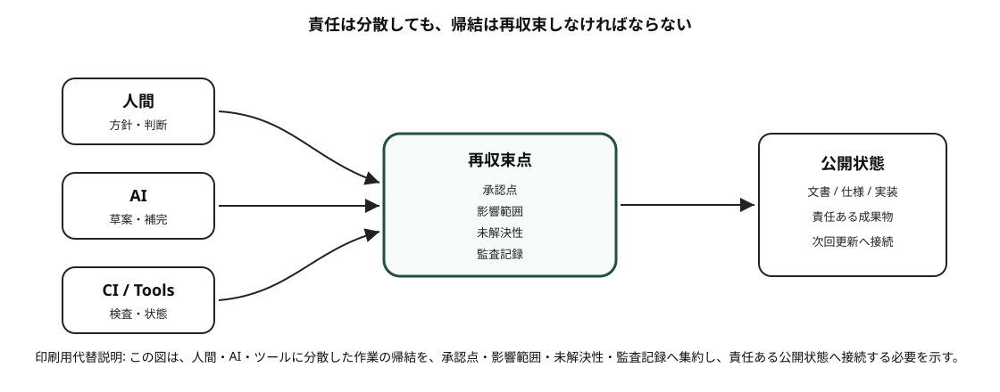

Figure 0-1
エンジニアリング変換と喪失
Chapter 0 の「エンジニアリングは何を変えるのか」に対応する図である。願望、暗黙知、属人的判断が、構造、明示知、再現可能手順へ変換される一方で、曖昧さ、文脈、例外感覚、判断の痛みが失われうることを示す。

印刷/PDF用の静的説明
この図は、エンジニアリングが実装可能性を得るために、曖昧な願望や暗黙知を構造へ変換する一方、その過程で文脈や未解決性が失われうることを示す。喪失そのものは避けられないが、何が失われたかを見えるようにすることがKotonoha Methodの役割である。
Figure 0-2 / 1-1
要望から実装までの意味変化フロー
Chapter 0 の小さな例、および Chapter 1 の「作業状態と意味状態は違う」に対応する図である。要望がIssue、仕様、実装、文書へ変換されるたびに、意味が保存、変換、補完、喪失されうることを示す。

印刷/PDF用の静的説明
この図は、要望がIssue、仕様、実装、文書へ進むたびに意味が変化しうることを示す。各段階で、元の意図が保存されたのか、実装可能な形へ変換されたのか、新しい補足が加えられたのか、あるいは何かが失われたのかを確認する必要がある。
Figure 1-3
Git diff と Semantic lineage の違い
Chapter 1 の「Gitは必要だが、意味履歴ではない」に対応する図である。Git diff が文字列やファイルの差分を示す一方で、Semantic lineage は意図、変換、喪失、未解決性、責任を追跡する必要があることを示す。

印刷/PDF用の静的説明
この図は、Git diff が変更された文字列やファイルを示す一方、その変更が意図・責任・未解決性に何をしたかは別途記録する必要があることを示す。意味履歴には、元の意図、変換、喪失、未解決性、責任の所在が必要である。
Figure 1-2
タスク完了と意味完了の違い
Chapter 1 の「タスク完了と意味完了は違う」に対応する図である。実装、テスト、レビュー、Done は作業状態の完了を示すが、意味完了には意図、未解決性、責任、次回更新方針の引き渡しが必要である。

印刷/PDF用の静的説明
この図は、Done が作業状態の完了であっても、意味完了にはまだ確認すべき要素が残ることを示す。意図が保存されたか、未解決性が残されたか、責任の帰結を誰が引き受けるか、次回更新方針が引き渡されたかを確認する必要がある。
Figure 1-4
AI生成物の昇格フロー
Chapter 1 の「AI生成物は進捗ではなく、意味変化を含む入力である」に対応する図である。AI生成物は、生成された時点ではまだ判断ではなく、draft、hypothesis、reviewed、accepted、published という段階を経て、責任ある公開状態へ進む。

印刷/PDF用の静的説明
この図は、AI生成物が生成直後には未確認の草案であり、仮説として読み、RDE観点で確認し、人間が承認して初めて責任ある公開状態へ進むことを示す。生成されたものを即座に判断や仕様として扱ってはならない。
Figure 1-5
責任再収束フロー
Chapter 1 の「責任が分散しても、帰結は再収束しなければならない」に対応する図である。人間、AI、CI/Toolsに分散した作業が、承認点、影響範囲、未解決性、監査記録を通じて責任ある公開状態へ再収束する流れを示す。

印刷/PDF用の静的説明
この図は、人間・AI・ツールに分散した作業の帰結を、承認点・影響範囲・未解決性・監査記録へ集約し、責任ある公開状態へ接続する必要を示す。責任の分散は避けられないが、帰結がどこにも戻らない状態は避けなければならない。